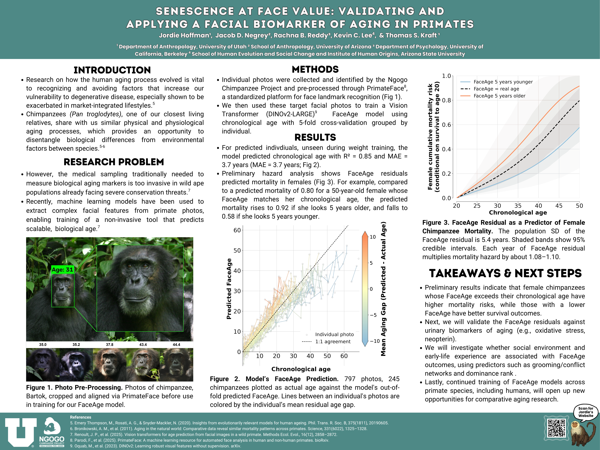
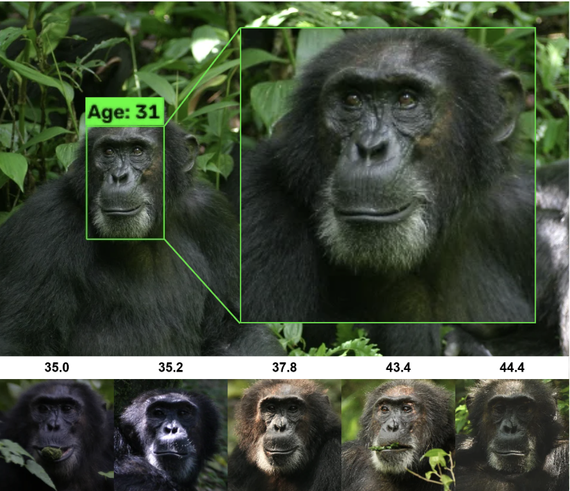
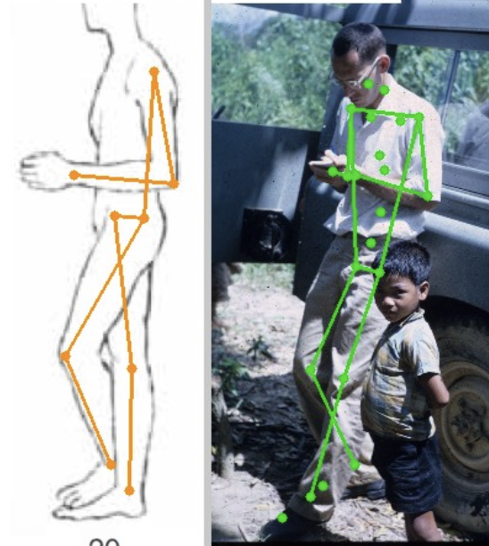

Anthropology | Machine Learning | Scientific Artist
I am a PhD student at the University of Utah Anthropology Department working with Thomas S. Kraft to develop machine learning models that help us answer questions about topics ranging from culture to health and biology in humans and our closest primate relatives.


Non-human primates are an important model system for the study of human health and aging, but many species are threatened or endangered and thus scientists cannot collect invasive biospecimens to study key biomarkers. AI presents a novel solution to this problem via feature detection from non-invasive images. We are training a Vision Transformer model to predict aging using a large-scale database of chimpanzees with known life histories. Results will enable the estimation of biological aging trajectories that can be compared with chronological age to determine how social stress and networks influence the speed of longitudinal aging trajectories, a critical question for understanding the social determinants of health in our closest relatives.

The "Inactivity Mismatch Hypothesis" (IMH) proposes that resting postures, which vary widely across human societies, are more critical for health outcomes than the total time spent resting itself. Although anthropologists have been interested in quantifying cultural differences in habitual postures since the 1950's, older studies have lacked rigorous quantitative methodologies to do this on a large scale. Building on older attempts to estimate postures from historical ethnographic photographs collected by anthropologists, we seek to use a trained machine learning model to automate the extraction and classification of 3-dimensional posture from candid photographs capturing the everyday life of global human populations over time. In addition to formally testing the IMH, this study brings new methods to a longstanding anthropological question and will inform our understanding of how lifestyle transitions over time have fundamentally altered the ways that humans move and position their bodies.